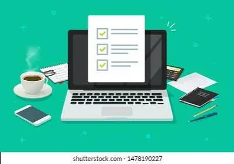
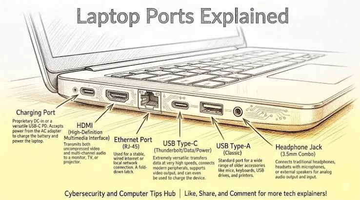

Laptops
The Ultimate Laptop Buying Guide: What to Check Before You Buy
Use this laptop buying checklist to compare performance, memory, storage, display, battery, build quality, connectivity, warranty and value.
Introduction
Purchasing a laptop can affect how you work and study for years to come. Even if a laptop looks great in a store or online, it may not be the right choice for you. The screen, RAM, upgradeability, keyboard, battery and customer support can all make a big difference after a few weeks of use.
The best way to choose a laptop is to know what you plan to use it for. Whether you’re a student, designer or developer each will require different requirements. Use this guide to help create a checklist to ensure you’re making the best choice. You’ll also learn how to determine what spec will work best for you and not pay for extra features.

1. Know what you will use it for and your budget
List out the main tasks you will want to do on your new laptop. These may be browsing, office work, video calls, programming, accounting, photo editing, video editing, CAD or gaming. Check the minimum and recommended requirements for any specialist software you’ll be using. Minimum requirements will tell you what can run but recommended requirements will give you a better experience.
Consider your budget including any essential accessories, software and warranty. Don’t just pay for a great brand processor and forget about the RAM and storage. Usually a good balance will give you a better overall experience.
Consider how long you’ll be using your laptop for. If you’ll be using it for a few years then make sure you get enough capacity for the likely applications you’ll be using. Don’t pay for a high-end graphics card and high RAM if you won’t be using them as the sales person said they were high-end.
2. Processor
The CPU affects how fast your applications will run. Check what exact model and generation you have. There are a variety of processors within families and a high-end processor may not be as fast as a new low-end one.
If you’re doing basic tasks like browsing, document work or general business software then a modern mid-range processor should suffice. If you’ll be doing development, data analysis or intense creative work then more cores and consistent performance will help. Check independent reviews for the exact model of laptop you’re looking at as the cooling and power will determine how long it can run at a high speed.
Consider the noise and heat. Some laptops may run well for a short period of time but become noisy and slow over a longer period. If you’ll be doing regular rendering, compiling large projects or intensive simulations then look for laptops with consistent performance.
3. RAM
RAM is the working memory on your laptop. If you don’t get enough RAM then you’ll notice a lag when switching between applications. Many general users will find 16GB a good amount. However if you’re doing lighter tasks then maybe 8GB will be enough.
If you’re a creative professional, developer (using virtual machines) or working with large amounts of data then you may want to aim for 32GB+. Check the exact spec as there may be a few options for RAM within the same model.
Check if your laptop has upgradable RAM. Some laptops have removable RAM whereas others have it soldered onto the motherboard. If it’s not upgradable then make sure you get enough for the lifespan of the laptop. Don’t assume there will be a free slot for RAM, check the manufacturers spec or support.

4. SSD
An SSD will help speed up your operating system and applications. Most new general laptops will have an SSD rather than a traditional hard drive. Check the capacity. Whilst 256GB may be enough for some, you’ll run out of space quickly once you’ve installed software and saved your projects. 512GB will give you more flexibility. If you’re working with large media libraries or specialist software then 1TB+ may be needed.
Check if there is another storage slot or if you can upgrade your existing SSD. Some laptops have a very small design meaning it can be difficult or impossible to upgrade. If you use cloud storage then consider if you’ll need offline access whilst travelling.
Ensure you have a separate backup. A large SSD won’t protect you from accidental deletion, theft, malware or hardware failure. Ensure you have a reliable backup and can restore your important files.
5. Display
Your display is something you’ll be using a lot. Check the size, resolution, brightness, viewing angles, colours and finish. A full HD resolution is a good starting point but if you’re working with design, photography or detailed spreadsheets then a higher resolution or larger screen may help.
If you’re working with colours then ensure you have a good colour range and accuracy. Some displays may look bright in a store but not be accurate. Check for independent testing. If you work in bright environments then check the brightness and anti-glare.
Check for dead pixels, flickering, uneven lighting and annoying glare. Also check the hinge and if you can adjust the screen to a comfortable position. Some users will find touchscreen and higher refresh rate useful but shouldn’t be prioritised.
6. Keyboard, touchpad and webcam
If you’ll be typing for long periods of time then the keyboard can have a bigger impact on your day-to-day happiness. Check the keyboard has good spacing, travel, layout and feel. Check the function keys do what you expect them to and if there is a backlit keyboard if you’ll be working in dark rooms often.
The touchpad should be accurate and consistent with gestures. If you often use an external mouse then this may not be as important. However it can be useful whilst travelling. If you’ll be attending online classes or meetings then check the webcam, microphone and speakers. Quality can vary greatly.
Check the build quality and hinge. Gently press around the keyboard area to ensure it doesn’t flex too much. Ensure the screen opens and closes smoothly. If you’ll be travelling with your laptop then it should feel sturdy but not too heavy.
7. Battery life
Battery life will depend on the testing. If you’re using video calling, high brightness, intensive software or multiple wireless connections then your battery life may be less than stated. Check for independent testing for web browsing, video or productivity tasks.
Check the battery capacity, charger size and charging port. Whilst it can be convenient to charge via USB-C check what power it can take and what wattage charger you’ll need. Some laptops only charge via a specific port. If you’ll be travelling often then consider how heavy the laptop and charger will be.
Over time the battery will lose its charge. Check what warranty the battery has. Check the manufacturers guidelines for charging and storing. Don’t just go for a laptop that says it can last all day, check the testing.
8. Ports and wireless.
List out what you’ll be connecting to your laptop. This could be a printer, external monitor, projector, USB stick, headset, camera, wired network or memory card. Check the ports available. Check what USB-C ports are available. Not all will be the same. Check if you can charge, transfer data and output video.
Check for wireless capabilities. Ensure it works with your devices and network. If you need to connect multiple monitors then check how many you can connect, resolution and refresh rate. A docking station may help but will incur an extra cost. Check it works with your laptop.
9. Operating system, security and software.
Check what operating system it has and if it can run the applications you need. Check specialist software, printers, scanners and peripherals have the latest drivers. If you’re purchasing it for work then check it meets your organisations security and device management requirements.
Some laptops will have security features such as firmware, secure boot, encryption and biometric login. These will vary between models and operating systems. Ensure you keep the device updated using official methods and use strong authentication. If it’s for business then check it can be updated and has security support for the time frame you’ll be using it for.
10. Warranty
Before purchasing check how long the warranty lasts, what it covers, what it doesn’t cover and the repair process. Check if there is local support, if they can collect or repair onsite and how long common repairs take. If you’ll be travelling with your laptop then accidental damage may be useful. Check what isn’t covered and the claims process.
Keep your invoice, serial number and warranty details. Check if the battery, charger and accessories have different warranty periods. If your laptop is essential for work then consider what you’d do if it needs repairing. Having a spare device or using cloud based processes may help.
11. Exact spec and price
Often there will be different options within a family. Check what processor, RAM, SSD, display, graphics, operating system and warranty you have. Check if the price includes the correct charger, licence for the operating system and any accessories. Check the returns policy and check the device as soon as you can.
Don’t just go for a percentage off. The laptop may not have the same RAM, SSD or display quality. Compare like for like and check independent reviews for the exact model.
Conclusion
Before purchasing your laptop check what you’ll be using it for, processor, RAM, SSD, display, keyboard, battery, ports, software and warranty. If you can try it out and compare the exact spec then you’ll be making a better choice. Usually a good balance will give you a better investment than a high-end laptop with features you won’t use.
Use this checklist to narrow down to 2 or 3 models. Compare the specs, support and overall price. Printerworld can help customers with their questions regarding laptops and printers. Check what is currently in stock, what spec, price and support is available.
Need a hand with your printer or laptop?
Printerworld sells printers, laptops and genuine supplies, and repairs and services both. Bring in your model number and we will help you get it right.